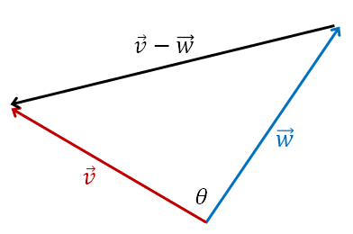
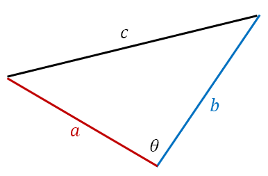

Lesson 2: The Dot Product
Given the two vectors below, their dot product \(\vec{v} \dotp \vec{w}\) is defined as below.
Dot Product in \(\mathbb{R}^2\)
We have discussed a variety of notations used to denote vectors. Below is the dot product stated in a different way.
An Example
Given the vectors \(\vec{v} = \langle 8, 9 \rangle\) and \(\vec{w} = \langle 7, -2 \rangle\), find \(\vec{v} \dotp \vec{w}\).
Important: The dot product does not yield a vector! It results in a scalar. It is sometimes called the scalar product.
Given the two vectors below, their dot product \(\vec{v} \dotp \vec{w}\) is defined as below.
Dot Product in \(\mathbb{R}^3\)
An Example
Given the vectors \(\mathbf{v} = 2\mathbf{i} + 8\mathbf{j} + 6\mathbf{k}\) and \(\mathbf{w} = \mathbf{i} - 2\mathbf{k}\), find \(\mathbf{v} \dotp \mathbf{w}\).
Given vectors \(\vec{u}\), \(\vec{v}\), and \(\vec{w}\), the following are true.
- Commutative Property
- \[ \vec{v} \dotp \vec{w} = \vec{w} \dotp \vec{v} \]
- Zero Vector Property
- \[ \vec{0} \dotp \vec{v} = 0 \]
- Distributive Property
- \[ \vec{u} \dotp (\vec{v} + \vec{w}) = \vec{u} \dotp \vec{v} + \vec{u} \dotp \vec{w} \]
- Magnitude Property
- \[ \vec{v} \dotp \vec{v} = \|\vec{v}\|^2 \]
Each of these properties can be verified by writing the vectors in components and carrying out the operations. As an example, we verify one of them below.
Verify the below property, for the vector \(\vec{v} = \langle v_1, v_2, v_3 \rangle\).
This follows by performing the operations via the components of the vectors.
Using the definition of the dot product with \(\vec{w} = \vec{v}\):
The other properties are proven in a similar way.
The angle \(\theta\), where \(0 \le \theta \le \pi\), between nonzero vectors \(\vec{v}\) and \(\vec{w}\) is given by the below formula.
Angle between Two Vectors

This follows from the Law of Cosines.
In the triangle, \(a = \|\vec{v}\|\), \(b = \|\vec{w}\|\), and \(c = \|\vec{v} - \vec{w}\|\), so

Expanding the left side with the properties of the dot product gives a second expression for it.
Comparing the two expressions, the \(\|\vec{v}\|^2\) and \(\|\vec{w}\|^2\) terms are the same, so the remaining terms are equal.
An Example
Find the angle between the vectors \(\mathbf{v} = 2\mathbf{i} + 2\mathbf{j}\) and \(\mathbf{w} = \mathbf{j} - \mathbf{k}\).
In angle bracket notation, the vectors can be stated as below. The dot products and the magnitudes are calculated.
Next, we use the formula for the cosine of the angle between the two vectors.
The angle between \(\mathbf{v}\) and \(\mathbf{w}\) is \(60^\circ\).
If the angle between two vectors is \(90^\circ\) or \(\pi/2\), the vectors are orthogonal.
Nonzero Vectors are Orthogonal if and only if their Dot Product is Zero.
This property is very important.
Observe what happens when \(\theta = \pi/2\) in the formula for the cosine of the angle between two vectors.
In the last step, both sides are multiplied by \(\|\vec{v}\|\,\|\vec{w}\|\), which is not zero because the vectors are nonzero.